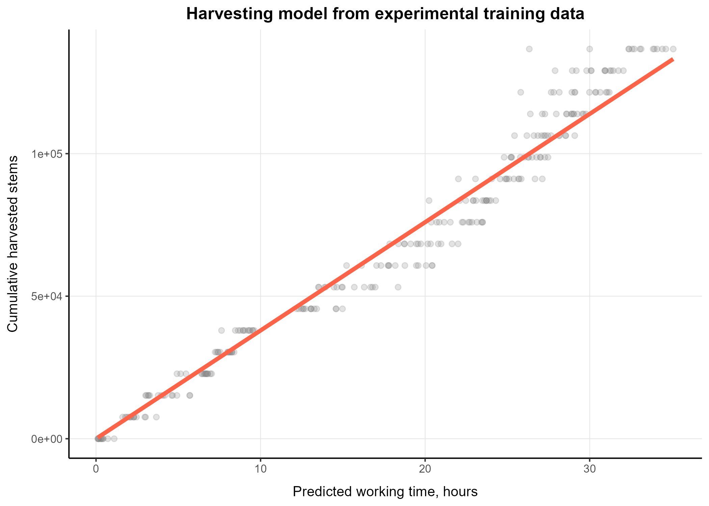
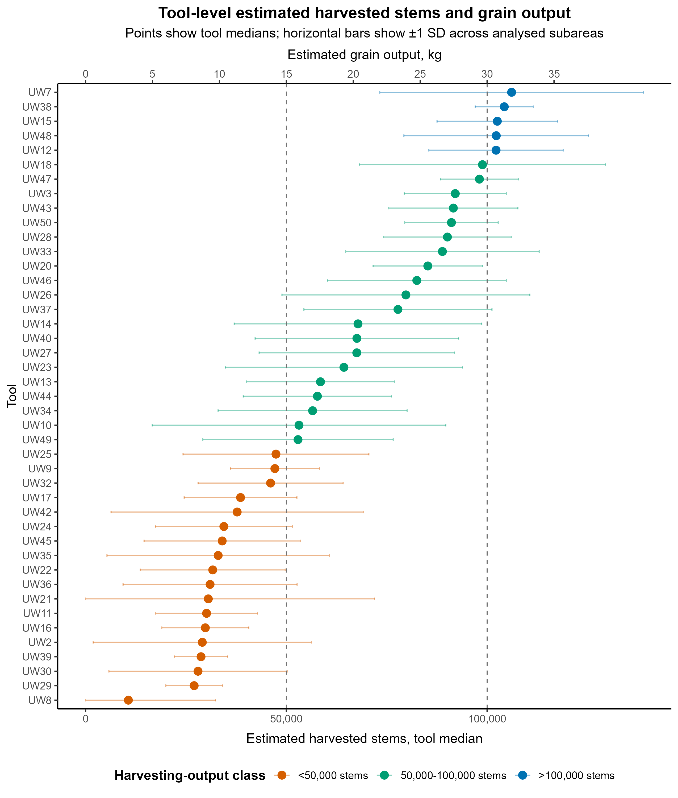

1. Overview
Experimental training data used to fit the Random Forest model for WORKING_TIME.
Archaeological observations to which the trained model is applied.
Main aggregation unit. The workflow no longer uses PERIOD subdivision.
The script CER_GOB.R is designed to be run from inside the folder TRAC3D/CER_GOB. It reads an Excel input file, trains a Random Forest model, predicts archaeological working time, converts predictions into harvested stems and grain output, and exports tables, figures and the trained model into OUT.
2. Inputs and folder structure
The input file must be located at CER_GOB/RAWDATA/RAWDATA.xlsx.
| Element | Expected location | Description |
|---|---|---|
| Script | CER_GOB/CER_GOB.R | Main R script. |
| Raw data | CER_GOB/RAWDATA/RAWDATA.xlsx | Excel file containing experimental and archaeological observations. |
| Outputs | CER_GOB/OUT | CSV tables, PNG figures and fitted model object. |
Required columns are CAT, WORKING_TIME, and TOOL. Optional identifier columns such as ID and NAME are retained when present.
3. Analytical workflow
- Load RAWDATA.xlsx and remove fully empty rows and constant columns.
- Convert selected numeric-like text columns to numeric values.
- Split data into experimental training rows, CAT == 1, and archaeological rows, CAT == 2.
- Train a Random Forest regression model to predict WORKING_TIME from selected 3D surface-texture variables.
- Predict working time for archaeological subareas with complete predictor data.
- Clamp predictions to the observed experimental working-time range.
- Convert predicted hours to harvested stems using 3,797.5 stems per hour.
- Convert harvested stems to grain weight using 0.30 g per harvested stem.
- Aggregate predictions by TOOL.
- Export tables, figures and the fitted model to OUT.
4. Integrated outputs
The current online OUT folder contains the generated CSV tables, PNG figures and model object. The table below explains how each output should be read.
| Output file | Type | What it contains | How to use it |
|---|---|---|---|
| arch2_subarea_predictions.csv | CSV subarea level | Prediction for each analysed archaeological subarea: raw predicted hours, clamped hours, predicted stems and clamped stems. | Use this for detailed inspection of prediction variability within individual tools. |
| arch2_tool_predictions.csv | CSV tool level | Tool-level summary of working time and harvested stems using mean, median, standard deviation and MAD. | Main table for comparing harvesting intensity across tools. |
| arch2_tool_grain_weight_kg_no_period.csv | CSV grain output | Tool-level conversion from harvested stems to grain output in grams and kilograms. | Use this table for archaeological interpretation of potential productive output. |
| arch2_total_grain_output_no_period.csv | CSV assemblage level | Total and summary statistics for the full assemblage, including total median stems and total median grain kg. | Use for assemblage-level statements rather than tool-by-tool comparison. |
| arch2_intensity_classes_tools_no_period.csv | CSV classification | Counts and proportions of tools assigned to low, mid, high and very-high intensity classes. | Use for categorical summaries of harvesting intensity. |
| arch2_stem_count_classes_no_period.csv | CSV classification | Counts and proportions of tools classified by harvested-stem thresholds: below 50,000, 50,000-100,000 and above 100,000 stems. | Use for broad output classes based on estimated harvested stems. |
| arch2_RF_variable_importance.csv | CSV model | Random Forest variable-importance scores for the selected predictors. | Use to identify which surface-texture variables most influenced model prediction. |
| arch2_rf_working_time_model.rds | RDS model object | Saved caret Random Forest model object. | Use in R with readRDS() to reload the fitted model. |
5. Integrated figures
Experimental harvesting model

This figure visualises the relationship between predicted working time and cumulative harvested stems in the experimental training data. The conversion line uses 3,797.5 stems per hour.
Tool-level harvested stems and grain output

Each point represents the median estimated harvested stems for a tool. Horizontal bars show plus/minus one standard deviation across analysed subareas. The secondary x-axis converts stems into estimated grain output in kilograms using 0.30 g per stem.
6. Interpretation guide
Working time
HOURS_median is the preferred robust estimate for tool-level use intensity because it reduces the influence of extreme subarea predictions.
Harvested stems
STEMS_median estimates how many stems could have been harvested by a tool under the experimental conversion rate.
Grain output
GRAIN_KG_median expresses the tool-level stem estimate as an approximate grain-weight equivalent.
The clamped predictions are preferable for interpretation because they prevent archaeological predictions from exceeding the experimentally observed working-time range used to train the model.
7. Reproducibility
To rerun the workflow locally, open a terminal inside TRAC3D/CER_GOB and run:
Rscript CER_GOB.R
The script uses the following main R packages: readxl, dplyr, ggplot2, caret, randomForest, tibble, and scales through namespace calls.
Report generated as a static HTML file for online consultation through GitHub or htmlpreview.github.io.